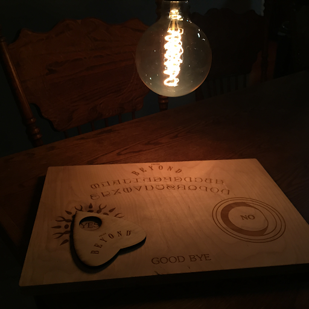
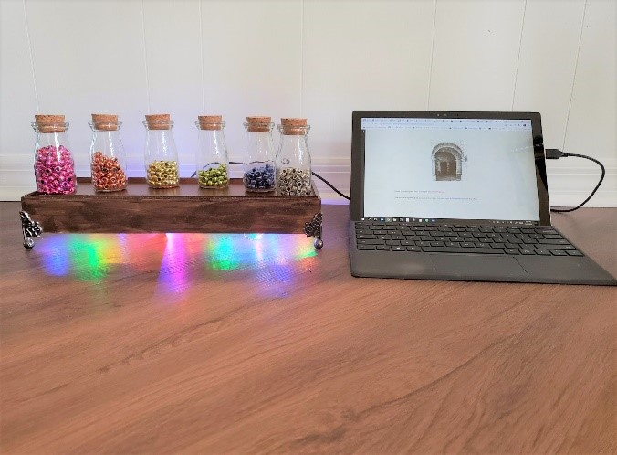
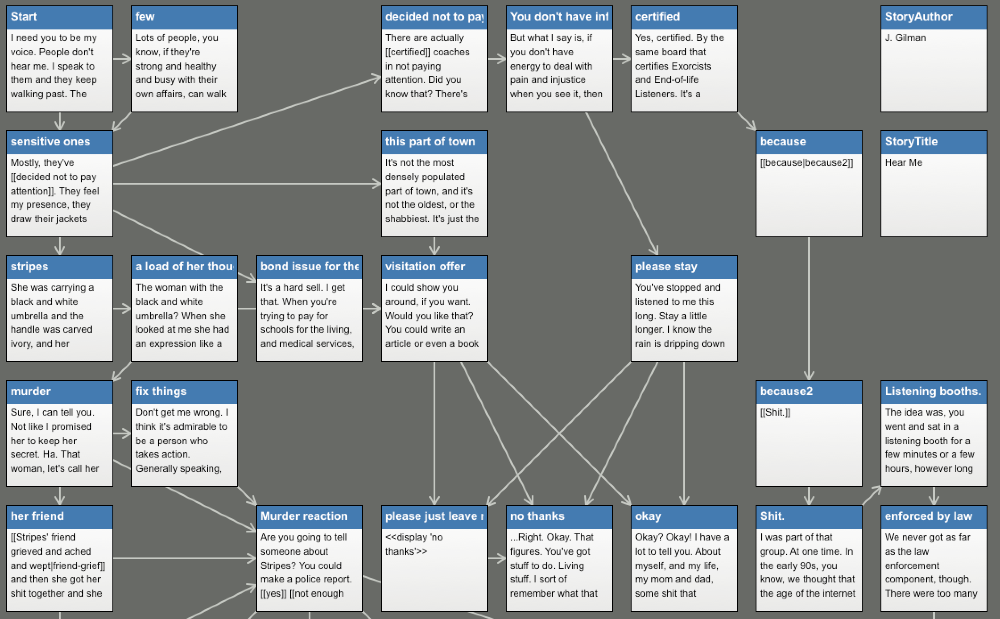
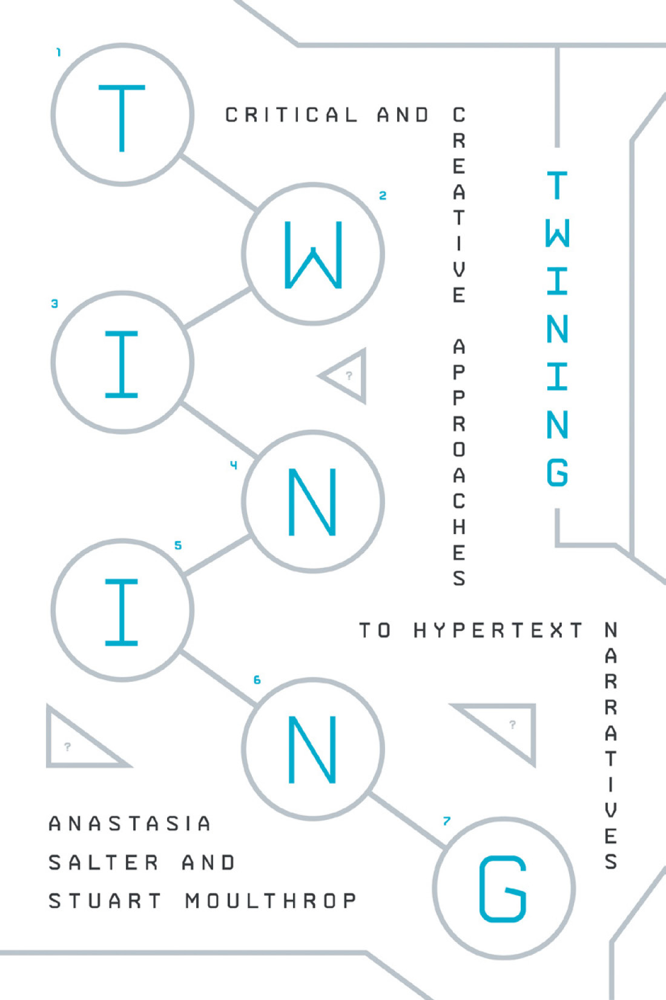

1. Open Twine
- Go to twinery.org. Use Twine in your browser, or download the desktop app if you can install software. The two look nearly the same.
- Create a new story and give it a name.
- Keep the default story format, Harlowe. Everything below is Harlowe.
Twine is not a host. The browser version saves into that one browser's storage. Use Build → Publish to File often. Clearing your browser data, or switching computers, loses unsaved work.
2. Passages and links
Twine works in passages (what the reader sees) and links (how they move). Its story map descends from hand-drawn ones like Deena Larsen's shower-curtain map of a hypertext, now in the MITH archives.
Double-click the start passage (marked with the green rocket), rename it Start, and write an opening that sets up the first choice. Put square brackets around the words the reader should click:
We might [[say one thing->phrase of significance]] and [[mean another->another passage]].
We can even have links that look different but lead to the [[same place->another passage]].
[[Go back<-Start]]
[[Start]][[text->Passage]]shows text and goes to Passage.[[Passage<-text]]is the same link written the other way round.[[Passage]]shows the passage's own title.
Whenever you link to a title that doesn't exist yet, Twine draws a new passage for it. Make at least one complete path with a sense of an ending, and check that every passage is linked from somewhere: a passage nothing links to can't be reached.
Fewer, bigger choices. You don't need many branches. A few paths with real differences (contrasting views, a deeper dive, a consequence) say more than many small decisions.
3. Make choices count
Harlowe can remember what the reader did and change later passages. Three macros go a long way. Set a variable when a choice is made:
(set: $handed to it + 1)
You let the machine stitch the next row.Check it later with if / else:
(if: $handed is 0)[Pieced and quilted by hand.]
(else:)[Pieced by you. Quilted by the machine.]And let the passage pick for itself with either:
You choose a pattern: (either: "swirling feathers", "interlocking stars", "a meander").(either:) is a tiny generative grammar: one slot, a list of options, a random pick each time. Keep it in mind: Act II builds whole sentences this way.
To see all three working together, play The Longarm: a short story about a quilter deciding how much of the quilting to hand to a machine. Then import the same file into Twine (below) to see how it is built.
4. Play and publish
- Use Build → Play (or Test, which shows your variables) to read your story as a reader would.
- Use Build → Publish to File. The result is one
.htmlfile that opens in any browser. - To share it, host the file anywhere that serves HTML, such as GitHub Pages, which we set up in Act IV. To add images, upload them next to the file and use
<img src="picture.jpg">in a passage.
Want more? The Twine Cookbook has working examples for each story format, and the practical chapters of Twining (Salter and Moulthrop) cover aesthetics (P-4) and procedure and poetics (P-2, P-3). The course demo Critical Making is a published Twine you can read and then import to see how it's built.
Unmake
“[Twine] might have been my graduate thesis, originally, if I had the patience to complete one … I was studying interaction design, so Twine was my attempt to make something that would be friendly to people who were writers more than coders.”
- Twine was made by one person, then kept going by a community, for people who were left out of “learn to code.” An agent will now write a Twine for anyone who can describe one. So is Twine pointless now? What did building it link by link give you that a description wouldn't?
- Look at your story map. Which choices did the reader get, and which did you keep for yourself?
- Rewrite the last passage of The Longarm with your own question about making with machines. Keep it: you'll come back to it in Act IV.
- Twine doesn't have to stay on a screen. In From Beyond (John Murray and Anastasia Salter, ELO 2015, Bergen), readers chose each link by moving the planchette of a wooden Ouija board; sensors in the board sent the choice to a modified Twine story about the supernatural. Emily's BeadED Adventures goes the other way: an interactive STEM story where each puzzle you solve earns a real bead, and the choices you make leave with you as a bracelet. What would your Twine be if the links were objects?




Reference files
- the-longarm.html
Open it in a browser to play. To edit it, in Twine choose Library → Import and pick this file; it opens as an editable story map.
- the-longarm.twee
The same story as plain text (Twee 3). Readable in any editor; Twine 2.6+ and Tweego can import it.